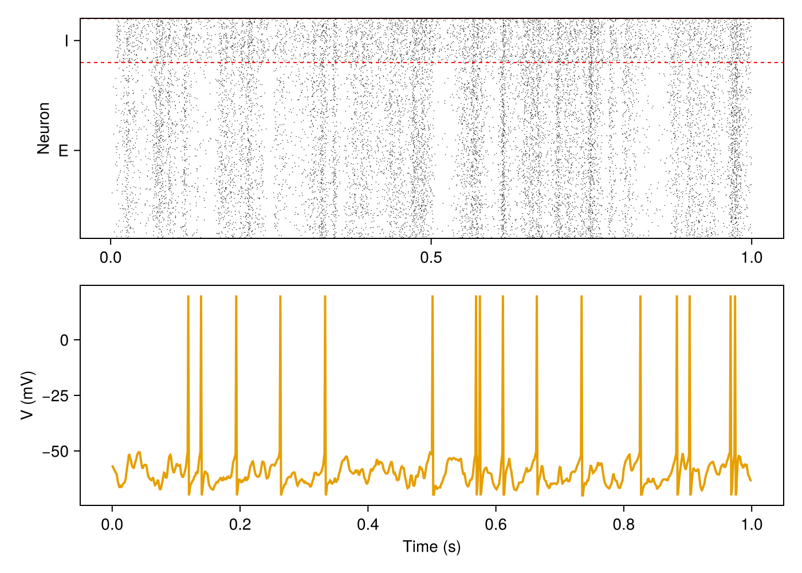

Getting started
After this page you can build a network of excitatory and inhibitory neurons, drive it with Poisson input, simulate it and plot its activity.
<!– run: sequential –>
Install
] add SpikingNeuralNetworks CairoMakieSpikingNeuralNetworks loads the models (SNNModels), the plots (SNNPlots) and the analysis tools (SNNUtils), and defines the alias SNN. CairoMakie renders the figures.
A balanced E/I network
using SpikingNeuralNetworks
SNN.@load_units # ms, mV, nS, pF, Hz, ... in the current scope
using CairoMakie
synapse = SNN.SingleExpSynapse(τe = 5ms, τi = 5ms, E_e = 0mV, E_i = -80mV)
spike = SNN.PostSpike(τabs = 2ms)
E = SNN.IF(; N = 800, param = SNN.IFParameter(C = 200pF, gl = 10nS, Vt = -50mV, Vr = -70mV),
synapse, spike, name = "E")
I = SNN.IF(; N = 200, param = SNN.IFParameter(C = 200pF, gl = 10nS, Vt = -53mV, Vr = -70mV),
synapse, spike, name = "I")
EE = SNN.SpikingSynapse(E, E, :ge; conn = (p = 0.05, μ = 2nS))
EI = SNN.SpikingSynapse(E, I, :ge; conn = (p = 0.05, μ = 2nS))
IE = SNN.SpikingSynapse(I, E, :gi; conn = (p = 0.05, μ = 20nS))
II = SNN.SpikingSynapse(I, I, :gi; conn = (p = 0.05, μ = 20nS))
noise = SNN.PoissonLayer(rate = 20Hz, N = 100)
inE = SNN.Stimulus(noise, E, :ge; conn = (p = 0.1, μ = 4nS))
inI = SNN.Stimulus(noise, I, :ge; conn = (p = 0.1, μ = 4nS))
model = SNN.compose(; E, I, EE, EI, IE, II, inE, inI, silent = true)- A population (
SNN.IF) isNneurons of one model. Itsparamsets the membrane,synapsehow input becomes a current,spikethe reset and refractory period. - A connection (
SNN.SpikingSynapse(pre, post, target; conn)) adds the weight of every synapse of a firing neuron totargetofpost::geis the excitatory,:githe inhibitory conductance.conngives the connection probabilitypand the mean weightμ. - A stimulus (
SNN.Stimulus) is external input; here 100 Poisson neurons at 20 Hz. composecollects everything into a model, aNamedTuplewithpop,syn,stimand the clocktime.
All numbers are in the unit system of the library (ms, mV, nS, pF, pA); writing the units makes this explicit.
Simulate and record
SNN.monitor!(model.pop, [:fire], monitor_rate = 50Hz) # all spikes of E and I
SNN.monitor!(E, [:v], sr = 1kHz) # membrane potential, sampled at 1 kHz
SNN.sim!(model, 1s)monitor! registers what to record before the run; sim! advances the model by one second with the default step dt = 0.125ms. Calling sim! again continues from where it stopped.
Analyse and plot
rates, r, names = SNN.firing_rate(model.pop; interval = 0:10ms:1s, pop_average = true)
fig = Figure(size = (700, 500))
SNN.raster!(Axis(fig[1, 1], ylabel = "Neuron"), model.pop)
SNN.vecplot!(Axis(fig[2, 1], ylabel = "V (mV)", xlabel = "Time (s)"), E, :v,
neurons = 1, add_spikes = true)
fig
E fires at about 10 Hz and I at about 20 Hz, irregularly.
Next steps
- Populations, Connections and Stimuli.
- Running simulations:
sim!,train!, time step, precision, threads. - Recordings and Visualization.
- Plasticity: STDP, short-term plasticity,
train!. - Tutorials: Populations, Plasticity, Simulations (save, load, rerun).
- Model catalogue: every model with its equations.